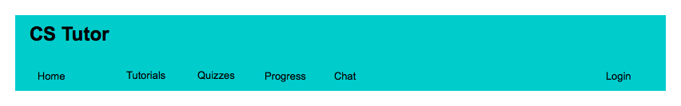
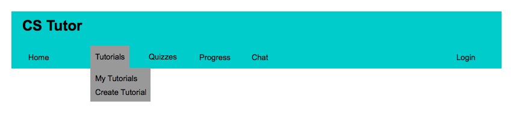
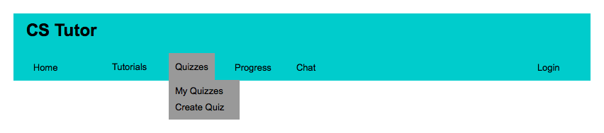
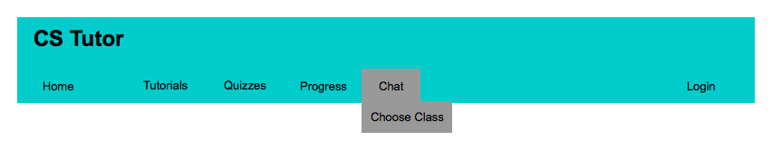

The following image depicts what the menu will look like to any user.
The Home, Progress, and Login are just buttons that will be clicked. The Tutorials, Quizzes, and Chat will have dual functionality, they can be just clicked which would take the user to a landing page for each of those, or if they are hovered over a dropdown will appear
When an instructor clicks on Home it will take them to the High Level Manager. If Progress is clicked it will take the instructor to the progress page.
If a user is not logged in then Login will appear in the menu and clicking it will take them to the login page. If however a user is logged in then then Login will be replace with My Account which will take a user to their account settings.
When an instructor hovers over Tutorials they will see 2 subcategories, My Tutorials and Create Tutorial as seen in the diagram below. If they click on the My Tutorials option it will take them to a page that has all of the tutorials that they are an author of. If they click the Create Tutorial option it will open up the Tutorial Builder.
When an instructor hovers over Quizzes they will see 2 subcategories, My Quizzes and Create Quiz as seen in the diagram below. If they click on the My Quizzes option it will take them to a page that has all of the tutorials that they are an author of. If they click the Create Quiz option it will open up the Quiz Builder.
When an instructor hovers over Chat they will see 1 subcategory, Choose Class as seen in the diagram below. Clicking on Choose Class will let them select a class that they would like to start office hours for.
